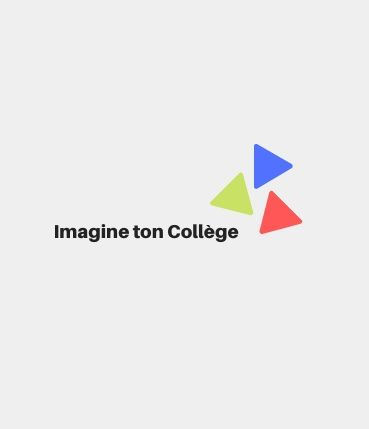
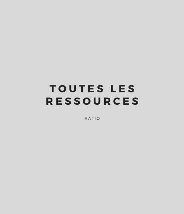

Bienvenue à tous sur le site internet de Ratio,
Cette année, le collège Pablo Picasso participe au projet "Imagine Ton Collège". Ce concour à été inventer à l'initiative du Conseil départemental des Hauts-de-Seine "afin de rassembler les besoins exprimés par les élèves et les professeurs sur leur vision du collège de demain." Sur nôtre si internet, vous pourrez avoir accès à une panoplie d'information quand a nôtre participation au projet... Vous pourrez aussi téléchargez quelques ressources "Avant-première" de nôtre production au concour.
Accueil
Le projet
Ressources
Toutes les ressources
RESSOURCES À TÉLÉCHARGER
Logo.png gingle tous les formatsListe des 11 collèges qui ont finalisés leur productions l'année dernière :
- Collège Bartholdi – Boulogne-Billancourt
- Collège Edouard Vaillant – Gennevillers
- Collège Henri Matisse – Issy-Les-Moulineaux
- Collège Romain Rolland – Le Plessis
- Collège Bel Air – Meudon
- Collège Maurice Genevoix – Montrouge
- Collège Jean Perrin – Nanterre
- Collège Marcel Pagnol – Rueil-Malmaison
- Collège Goerge Sand – Chatillon
- Collège Henri Sellier – Suresnes
- Collège Marechal Leclerc – Puteaux